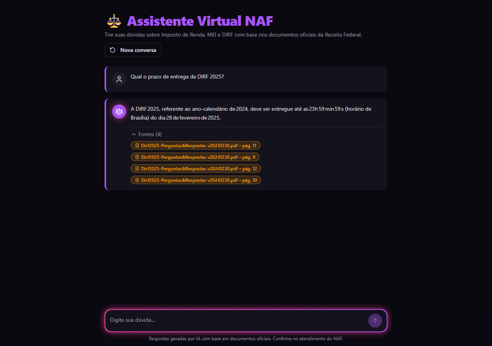
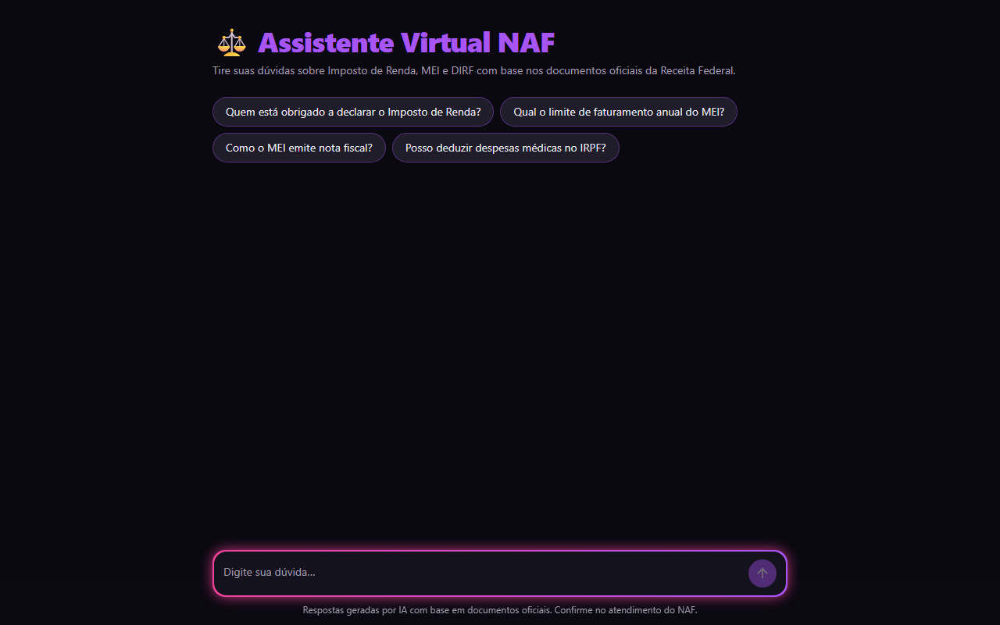
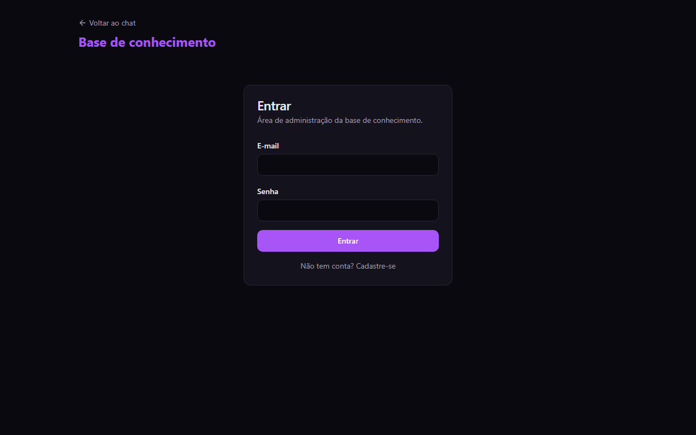

Assistente Virtual NAF
Um assistente virtual inteligente que esclarece dúvidas sobre Imposto de Renda, MEI e DIRF com base exclusivamente na documentação oficial da Receita Federal, indicando as fontes e páginas que fundamentam cada resposta.
Objetivo
Dar respostas rápidas e confiáveis a dúvidas fiscais comuns, apoiando o atendimento do NAF (Núcleo de Apoio Contábil e Fiscal).
Problema
As respostas oficiais estão em PDFs longos. Só o "Perguntas e Respostas" do IRPF 2024 tem 301 páginas. Achar um trecho específico leva tempo.
Solução
Busca semântica nos PDFs e uma IA que só responde com o que encontrou. Se não encontrou, ela diz que não sabe.
Sobre o projeto
Contexto, motivação e para quem ele serve.
Contexto acadêmico
Trabalho desenvolvido na FMU. Recria, em tecnologia web, um chatbot de referência feito em Python (Streamlit, LangChain, Chroma e Groq), mantendo os mesmos parâmetros de busca.
Motivação
Praticar a técnica RAG (geração com recuperação de documentos) num caso real: informação fiscal, em que resposta inventada causa prejuízo.
Justificativa
Um chatbot comum pode "alucinar". Aqui a resposta fica presa ao documento oficial e traz a página de origem, para a pessoa conferir.
Público-alvo
Contribuintes pessoa física, microempreendedores individuais (MEI) e os alunos que atendem no NAF.
Tecnologias
Cada peça e o papel dela.
| Camada | Tecnologia | Para quê |
|---|---|---|
| Interface | React 18, TypeScript, Vite, Tailwind CSS, shadcn/ui | Tela do chat e área de administração |
| Leitura de PDF | pdfjs-dist | Extrai o texto de cada página no navegador |
| Embeddings | multilingual-e5-small (384 dimensões), @huggingface/transformers, no navegador | Transforma texto em vetores para a busca por significado, com bom suporte a português |
| Servidor | Supabase Edge Functions (Deno) | Funções chat e ingest |
| Banco de dados | Supabase Postgres + pgvector (índice HNSW) | Guarda os trechos e faz a busca por similaridade |
| Modelo de linguagem | Groq, openai/gpt-oss-120b, temperatura 0 | Escreve a resposta a partir dos trechos encontrados |
| Acesso | Supabase Auth, papéis e RLS | Só administradores alteram a base de conhecimento |
| Testes | Vitest | 9 testes do divisor de texto |
Demonstração
Como o sistema funciona e como ele está hoje.
Caminho de uma pergunta
Caminho de um documento
- Base carregada: 4 PDFs da Receita Federal, divididos em 1.867 trechos.
- Teste com 80 perguntas cuja resposta já se conhece, feitas ao chat publicado: 78 certas (97,5%). Antes da última melhoria eram 92%.
- Quando a resposta não está nos documentos, o assistente indica o site da Receita Federal ou, para MEI, o Guia do MEI do Sebrae.
- O assistente está publicado em razzano380.github.io/assistente-virtual-naf/app. Na primeira visita, o navegador baixa o modelo de busca (cerca de 113 MB); depois, ele fica guardado.



Desenvolvimento
O que já funciona e o que ainda falta.
Implementado
- Chat com resposta formatada e lista de fontes
- Resposta padrão quando a informação não está nos documentos
- Proteção contra instruções maliciosas dentro da pergunta
- Login e papel de administrador
- Upload de PDF com barra de progresso, lista e exclusão
- Divisor de texto com testes automatizados
- Banco, permissões e funções publicados no Supabase
- Base carregada: 4 PDFs, cerca de 2.090 trechos
- Verificação em duas etapas e limite de uso no chat
- Avaliação automática da busca com 74 perguntas
- Aplicativo publicado no GitHub Pages
- Histórico da conversa: perguntas curtas como "e se eu passar disso?" entendem a pergunta anterior
- Resposta aparecendo aos poucos (streaming)
- Filtro por categoria na busca (IRPF, MEI ou DIRF)
Em desenvolvimento
- Corrigir as 2 perguntas que ainda erram no teste de ponta a ponta (hoje 78 de 80, 97,5%)
Próximas entregas
- Segunda IA conferindo se a resposta está nos trechos (em avaliação)
Documentação técnica
Versão completa: DOCUMENTACAO.md.
Estrutura dos arquivos
src/ pages/Index.tsx chat público pages/Admin.tsx login, upload e lista de documentos components/chat/ caixa de pergunta, mensagem e fontes lib/pdf.ts extrai o texto do PDF lib/chunker.ts divide o texto em trechos (com testes) lib/embeddings.ts gera os vetores no navegador supabase/ migrations/ tabelas, pgvector, permissões functions/chat/ busca os trechos e chama a IA functions/ingest/ valida o admin e grava os trechos docs/ esta página e a documentação
Como executar
git clone https://github.com/Razzano380/assistente-virtual-naf.git cd assistente-virtual-naf npm install cp .env.example .env # preencher com a URL e a chave pública do Supabase npm run dev # abre em http://localhost:5173 npm test # roda os testes
Requisitos
Node.js 20 ou mais recente.
Um projeto Supabase com a migração aplicada e as duas funções publicadas.
Uma chave da Groq cadastrada como segredo no Supabase. Ela nunca fica no código nem no navegador.
Evolução do projeto
Histórico e principais melhorias.
- Análise do chatbot de referência em Python e definição dos requisitos da versão web.
- Primeira versão: chat, área de administração, divisor de texto e testes.
- Banco de dados e funções publicados no Supabase.
- Embeddings dos documentos gerados no navegador: no servidor gratuito, o envio de PDFs estourava o limite de processamento (erro 546).
- Repositório público e esta página de apresentação.
- Base carregada e primeiros testes reais. A IA citava páginas inexistentes; agora as páginas vêm do banco.
- Modelo de busca trocado (gte-small, treinado em inglês, por multilingual-e5-small), e as perguntas de MEI passaram a ser respondidas.
- Trechos cortados por pergunta e busca com 6 trechos, e "Quem está obrigado a declarar o IR?" passou a ser respondida.
- Segurança: verificação em duas etapas para o administrador, limite de uso no chat e cadastro público desligado.
- Avaliação automática da busca com 74 perguntas: 68 acertos (92%).
- Três tentativas de melhorar a busca, medidas no gabarito, sem ganho: título da pergunta (65), busca híbrida por palavras (67) e modelo multilingual-e5-base (62). A busca atual foi mantida.
- Aplicativo publicado no GitHub Pages e captura de uma resposta real com fontes nesta página.
- Busca em duas etapas: o banco traz 20 trechos e uma IA menor escolhe os 6 que respondem. Teste de ponta a ponta com 80 perguntas no chat publicado: 77 certas (96%, antes 92%).
- Sem resposta nos documentos, o chat indica o site da Receita Federal ou o Guia do MEI do Sebrae.
- Mensagens soltas ou fora do assunto (como "sabao") passaram a receber "Não encontrei", em vez de uma resposta inventada.
- Histórico da conversa, resposta em streaming e filtro por categoria no chat.
- Divisor de texto passou a reconhecer a numeração do PDF gov_MEI (de 159 para 382 trechos, um por pergunta). Teste de ponta a ponta: 78 certas de 80 (97,5%).